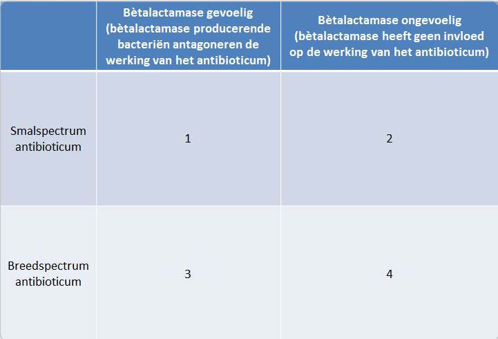
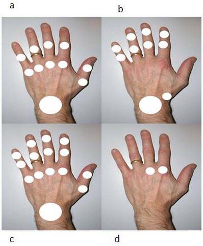
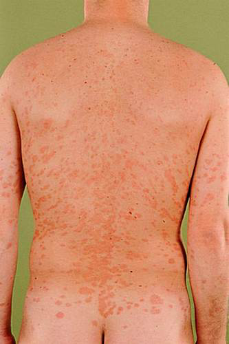
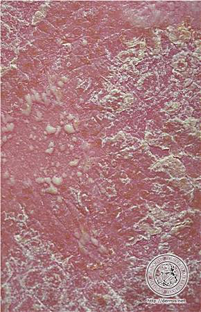
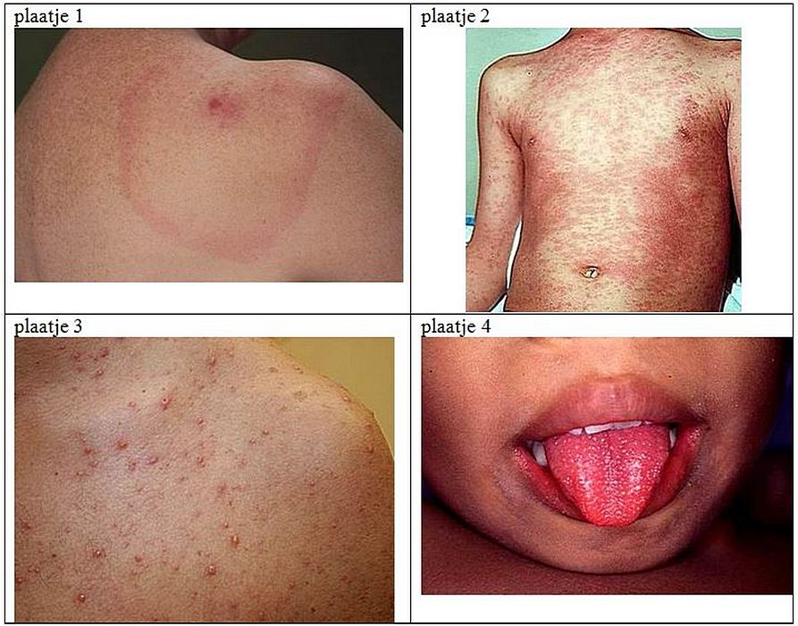
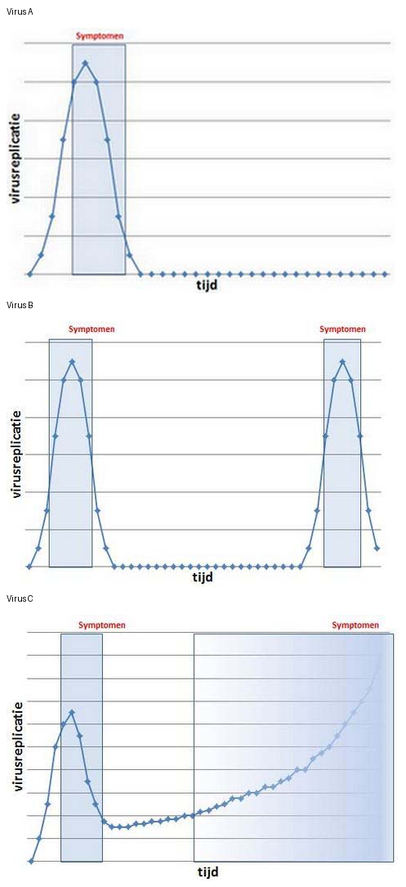
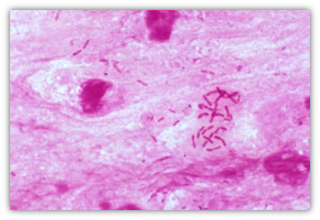
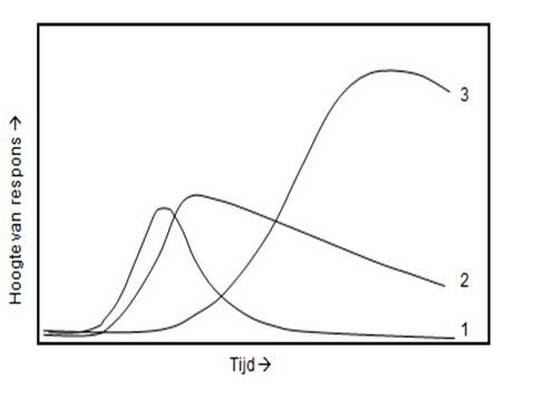

Menu
Infectie en inflammatie1e Toetsmoment 2017‑2018
Examen inleveren
Weet je zeker dat je het examen afsluit?
Examen resetten
Al je antwoorden worden gewist en je begint opnieuw. Weet je het zeker?
Jouw resultaten
Infectie en inflammatie · 1e Toetsmoment 2017‑2018
—
/ 50
0
Goed
0
Fout
0
Niet beantwoord
Vraag 1

Plaats de bètalactamantibiotica in de corresponderende vakjes van de tabel.
Sleep een optie naar de bijbehorende rij, of tik eerst op een kaart en dan op een rij.
Amoxicilline
Sleep hier naartoe
Meropenem
Sleep hier naartoe
Feneticilline
Sleep hier naartoe
Flucloxacilline
Sleep hier naartoe
Vraag 2
Een vrouw van 61 jaar met type 2 diabetes meldt zich bij de huisarts i.v.m. dysurie en pollakisurie. Ze heeft geen koorts, maar wel pijn in de onderbuik. Het urineonderzoek toont leukocyturie en een positieve nitriettest.
Wat is je werkdiagnose?
Vraag 3
Een 60-jarige vrouw, van Surinaamse afkomst, gaat corticosteroïden en anti-TNF-alfa krijgen ivm reumatoïde artritis. Zij heeft géén darmklachten.
Welk diagnostisch onderzoek naar darmparasieten is aangewezen?
Vraag 4
Noem twee belangrijke bijwerkingen van gentamicine.
Meerdere antwoorden mogelijk.
Vraag 5
In welk seizoen komen in Nederland norovirusinfecties het meest voor?
Vraag 6
Het gelijktijdig gebruik van een tetracyclinederivaat (zoals doxycycline) en een ijzerpreparaat (zoals ferrofumaraat) heeft gevolgen voor de farmacokinetiek van deze middelen.
Wat zijn deze gevolgen?
Vraag 7
Een 70-jarige vrouw is uitgegleden op straat. Behalve een gebroken heup heeft zij ook enkele schaafwonden. Ze is verward, weet niks te vertellen over haar vaccinatiestatus en deze is nergens gedocumenteerd.
Wat is het juiste beleid t.a.v. de tetanusprofylaxe?
Vraag 8
Itraconazol wordt regelmatig voorgeschreven voor onychomycosen; itraconazol is een sterke remmer van CYP3A4. Simvastatine (cholesterolverlager) wordt door het CYP3A4 enzym gemetaboliseerd tot de niet-actieve vorm, die vervolgens met de feces wordt uitgescheiden.
Waarom is gelijktijdig gebruik van simvastatine en itraconazol niet geadviseerd?
Vraag 9
Wat is het grootste risico bij een kind met de ziekte van Kawasaki? De ontwikkeling van:
Vraag 10
Bij diverse reumatische ziekten kunnen auto-antilichamen in het bloed voorkomen. Koppel het meest specifieke auto-antilichaam aan de reumatische ziekte.
Sleep een optie naar de bijbehorende rij, of tik eerst op een kaart en dan op een rij.
Granulomatosis with polyangiitis
Sleep hier naartoe
Polymyositis
Sleep hier naartoe
Reumatoïde artritis
Sleep hier naartoe
SLE
Sleep hier naartoe
Vraag 11
Voor welke reumatologische aandoening zijn de afwijkingen aan het bekken op deze röntgenfoto karakteristiek?
Vraag 12
Welk patroon van aangedane gewrichten past het beste bij artrose? (zie afbeelding a, b, c en d)

Vraag 13
Waar moet de initiële behandeling van polymyalgia reumatica uit bestaan?
Vraag 14
Bij welke endocriene of metabole aandoening zijn pijn en stijfheid in proximale spiergroepen, gewrichtsklachten en het carpale tunnelsyndroom kenmerkend?
Vraag 15
Een 45-jarige man presenteert zich met een monoartritis van de rechterknie. Je hebt verdenking op jicht.
Welk onderzoek is het belangrijkst om de diagnose jicht te kunnen stellen?
Vraag 16
Welke factor is geassocieerd met een verhoogd risico op het krijgen van reumatoïde artritis?
Vraag 17
Welke complicatie kan leiden tot een slechte prognose bij patiënten met systemische sclerose?
Vraag 18
Wat zijn drie alarmsignalen of –symptomen van ernstige cutane bijwerkingen van geneesmiddelen?
Meerdere antwoorden mogelijk.
Vraag 19
Er bestaan vier typen immunologische reacties volgens Gell & Coombs. Kies de juiste diagnose bij het type overgevoeligheidsreactie.
Sleep een optie naar de bijbehorende rij, of tik eerst op een kaart en dan op een rij.
Type 1 direct type
Sleep hier naartoe
Type 2 cytotoxisch
Sleep hier naartoe
Type 3 immuuncomplex
Sleep hier naartoe
Type 4 cellulair/delayed type
Sleep hier naartoe
Vraag 20
Bij epicutane testen in het kader van allergologisch onderzoek zijn de momenten van aflezen van belang.
Deze zijn na:
Vraag 21
Kies de juiste alternatieven.
De dermatoloog stelt de diagnose . Het meest aangewezen beleid is .
Vraag 22
Ouders komen bij jou met hun zoon Matthis van 6 maanden met atopisch eczeem. Zij doen geen oog dicht 's nachts omdat Matthis veel jeuk heeft en krabt en urenlang huilt. Zij maken zich erg veel zorgen om hem en vragen zich af hoe zijn toekomst er uit ziet.
Welke drie beweringen zijn juist?
Meerdere antwoorden mogelijk.
Vraag 23
Een moeder komt met haar dochter Annabel van 7 maanden op je huisartsenspreekuur. Annabel heeft sinds 1 week deze huidafwijkingen. [zie foto]
Wat is de meest waarschijnlijke diagnose?
Vraag 24
Noem twee veel voorkomende verwekkers van erysipelas.
Meerdere antwoorden mogelijk.
Vraag 25
Wat is de meest voorkomende verwekker van een voetschimmel?
Vraag 26

Kies de juiste alternatieven.
Het klinisch beeld: een 22-jarige patiënte met een licht jeukende huidafwijking, aanvankelijk begonnen met één plek maar later uitbreidend over de romp. De meest waarschijnlijke diagnose is .
Vraag 27
Een patiënt die al langere tijd bij je onder behandeling is in verband met psoriasis, komt op je spreekuur. Hij is ziek, koortsig en heeft pijn. Bij lichamelijk onderzoek zie je het volgende huidbeeld over een groot deel van de romp.
Wat is de meest waarschijnlijke diagnose?

Vraag 28
De heer Van Os is 78 jaar en komt op het spreekuur van de huisarts. Sinds 5 dagen moet hij vaak plassen, brandt het bij het plassen en stinkt de urine erg. Hij heeft sinds twee dagen 38,9 graden koorts. Bij lichamelijk onderzoek blijkt hij slagpijn te hebben in de flank ter hoogte van de linker nierloge. De urinestick is positief voor ery's, leuko's en nitriet. De huisarts besluit een antibioticum voor te schrijven.
Op basis van welke bevindingen kan de huisarts niet volstaan met nitrofurantoïne, maar dient zij ciprofloxacine voor te schrijven? Kies twee antwoorden.
Meerdere antwoorden mogelijk.
Vraag 29
Wat is de meest voorkomende presentatie van borreliose (de ziekte van Lyme)?
Vraag 30
Kies de juiste alternatieven.
Van alle patiënten met malaria tropica bevindt zich in Subsahara Afrika.
Vraag 31
Selecteer vier belangrijke predisponerende factoren voor het ontwikkelen van een urineweginfectie.
Meerdere antwoorden mogelijk.
Vraag 32
Bij welke patiënten met een pneumonie is een opportunistische infectie met Pneumocystis jiroveci (PCP) waarschijnlijk?
Vraag 33

Kies het klinisch beeld (plaatje) bij de verwekker. (Zie de vier plaatjes in de afbeelding.)
Sleep een optie naar de bijbehorende rij, of tik eerst op een kaart en dan op een rij.
Borrelia burgdorferi
Sleep hier naartoe
mazelenvirus
Sleep hier naartoe
Streptococcus pyogenes
Sleep hier naartoe
varicella zostervirus
Sleep hier naartoe
Vraag 34
Koppel aan het ziektebeeld het veroorzakend micro-organisme.
Sleep een optie naar de bijbehorende rij, of tik eerst op een kaart en dan op een rij.
Een 18-jarige studente is net sinds een week terug van familiebezoek in Pakistan, met nu sinds 5 dagen toenemend ziek met oplopende, continue koorts, buikpijn, hoofdpijn, droge hoest en beneveld bewustzijn.
Sleep hier naartoe
Op een cruiseboot zijn meerdere passagiers ziek geworden met kortdurende hevig braken en diarree.
Sleep hier naartoe
In de zomer, 2 dagen na een barbecue op de voetbalvereniging, wordt een 41-jarige niet lekker met koorts 38,7°C, waterdunne diarree met bloedbijmenging en buikkrampen.
Sleep hier naartoe
Een 28-jarige vrouw heeft na een reis door Zuid Amerika al weken veel gerommel in een opgezette buik, volumineuze, vettige diarree en 4 kg gewichtsverlies.
Sleep hier naartoe
Vraag 35
Een twee weken oude neonaat wordt verdacht van bacteriële meningitis.
Wat is de meest waarschijnlijke verwekker?
Vraag 36
Buiktyfus, een infectie met Salmonella typhi, is een ernstige systemische infectie. Na ingestie kunnen deze bacteriën zich verspreiden naar een groot aantal organen, bijvoorbeeld de milt, beenmerg en galblaas.
Wat maakt deze verspreiding door het lichaam mogelijk?
Vraag 37
Een 68-jarige, tevoren gezonde en actieve man wordt een paar dagen na zijn verblijf in hotels in Spanje ziek met hoesten, hoge koorts en toenemende verwardheid. De X-thorax die op de SEH is gemaakt laat beiderzijds vlekkige infiltraten zien.
Wat is de meest waarschijnlijke oorzaak?
Vraag 38
Een 42-jarige aan intraveneuze drugs verslaafde en dakloze man met AIDS heeft koorts en hoestklachten. In zijn sputum zijn in de Ziehl-Neelsenkleuring zuurvaste staven te zien.
Wat is de meest voorkomende wijze waarop een infectie met deze bacterie wordt opgelopen?
Vraag 39
Welke twee biologische markers worden gebruikt om een hiv-infectie in een patiënt te vervolgen ('monitoren')?
Meerdere antwoorden mogelijk.
Vraag 40
Een 54-jarige vrouw met COPD wordt al een paar dagen via de huisarts behandeld voor een pneumonie. Ondanks antibiotica wordt ze echter steeds zieker met persisterende koorts; op de spoedeisende hulp wordt een foto gemaakt die links een infiltraat laat zien met veel pleuravocht.
Wat moet er nu gebeuren?
Vraag 41
Bij een ernstige sepsis worden regelmatig complicaties gezien. Welke complicatie hoort hier NIET bij?
Vraag 42
Op welke manier worden late gevolgen van een streptokokkeninfectie zoals bijvoorbeeld poststreptokokkenglomerulonefritis gediagnosticeerd?
Vraag 43
Een 30-jarige vrouw krijgt plotseling hoge koorts (40°C), spierpijn en hoofdpijn, voelt zich moe en ziek en duikt het bed in. Ze is niet in staat om zelfs lichte karweitjes op te knappen. Naast de koorts en algemeen onwelbevinden is ze neusverkouden, heeft ze keelpijn en hoest ze. De koorts duurt zo'n 3-4 dagen, waarna de temperatuur geleidelijk normaliseert en patiënte in de loop van de week vanzelf opknapt.
Van welke infectieziekte is dit het typische beloop?
Vraag 44

Welk tijdsbeloop past bij een infectie met welk virus? (Virus A, B en C — zie de curves in de afbeelding.)
Sleep een optie naar de bijbehorende rij, of tik eerst op een kaart en dan op een rij.
Virus A
Sleep hier naartoe
Virus B
Sleep hier naartoe
Virus C
Sleep hier naartoe
Vraag 45
Op welke lichaamscellen grijpt het humaan immunodeficiëntievirus (hiv) NIET aan?
Vraag 46
Een 25-jarige vrouw wordt via de SEH opgenomen met hoge koorts, koude rillingen en een pijnlijke rechteronderbuik onder verdenking van acute appendicitis. De chirurg vindt peroperatief rondom de appendix veel pus dat zij instuurt voor Gramkleuring en kweek. [zie foto]
Wat is de meest waarschijnlijke verwekker?

Vraag 47
Een mens draagt vele micro-organismen bij zich in zijn microbioom, deze worden commensalen genoemd.
Welk micro-organisme, als dat uit het sputum van een patiënt wordt gekweekt, is altijd geassocieerd met een actieve infectie?
Vraag 48
De verwekker van welke infectieziekte wordt bij voorkeur gediagnosticeerd met behulp van een real-time polymerase kettingreactie (RT-PCR)?
Vraag 49
Een 60-jarige man afkomstig uit Somalië komt naar de SEH met sinds 3 maanden klachten van koorts, gewichtsverlies en nachtzweten. Hij heeft een klier van 4 cm doorsnee palpabel in de hals. Op de X-thorax zijn geen afwijkingen.
Wat is de meest waarschijnlijke diagnose?
Vraag 50

De grafiek geeft het verloop van de antigeenconcentratie en de antistofrespons tegen Epstein-Barrvirus (EBV) weer. Zet de juiste parameters bij de verschillende curves.
Sleep een optie naar de bijbehorende rij, of tik eerst op een kaart en dan op een rij.